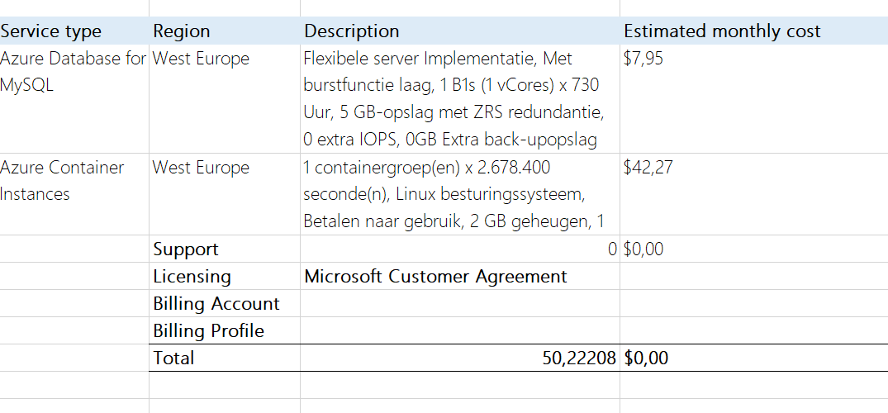
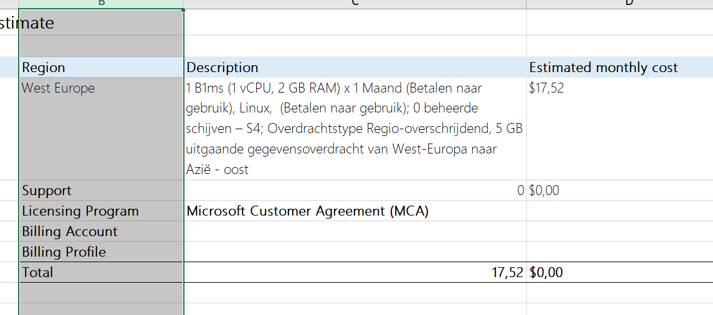

| Opdracht |
Oplossing |
Extra |
| Probeer bij het bouwen van jouw
oplossing toekomstige scalability & high availability in het achterhoofd te houden.
Kies voor de meest kostefficiënte oplossing en bereken tevens wat het zou kosten om de website
gedurende één maand te laten draaien. |
Statisch site eist geen vertitale, horizontale scaling. Loadbalancer zou kunnen indien plots request te groot
worden. Requirements eisen geen uitbreidbaarheid naar application container. Basic plan voor static web is
genoeg. Gekoppeld aan github, dit voor een beter versioning van CV doc. Ik heb dus gekozen voor een free plan.
|
 |
| Publieke cloud een database voor een type database (MySQL, MariaDB, Microsoft SQL,
PostgreSQL, …). Verbinden via een webeditor, via een cloud shell
Kies voor de meest kostefficiënte oplossing en bereken tevens wat het zou kosten om de database
gedurende één maand te laten draaien. |
Ik heb gkozen voor de azure flexibel MYSQL container en een container ingespoeld met docker PHPMYADMIN
Dit heeft flexibiliteit voor te verbinden lang ssh op DB of met webeditor langs PHPMYADMin.
|

|
| Publieke gamserver hosten op goedkope manier. poort 27910 |
Oplossing 1 is een ubuntu server met min aan resource. Standard B1ms, 2gb ram 1cpu
Inspoelen van quake server
quakeserver
Deze oplossing heeft een console applicatie op terminal om te monitoren
SSH voor connectie met server
Oplossin 2 is windows 10. Standard B1ms, 2gb ram 1cpu
Inspoelen van quake applicatie met een update voor opengl
SSH voor connectie met server
|

|